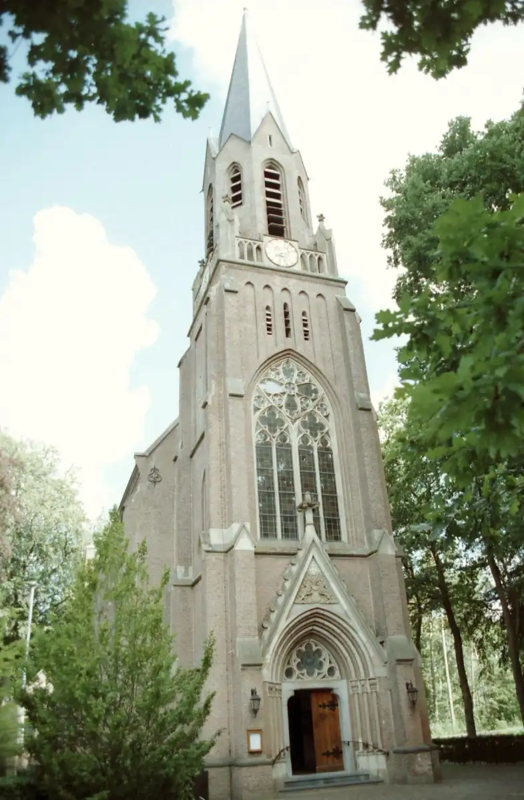
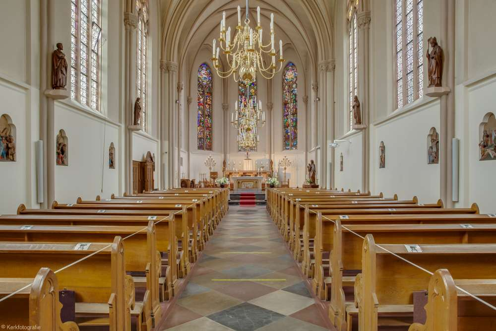

Geloof & bezinning
Een vertrouwde plek voor oecumenische diensten, rouw en trouw, stilte en persoonlijke bezinning.
Samen voor de Joppekerk
Al sinds 1868 een plek die ons verbindt.
Dat willen we zo
houden. Voor Joppe,
voor elkaar en voor wie na ons komt.
Een initiatief van betrokken
parochianen en Joppenaren


Een vertrouwde plek, al generaties lang01 — Ons verhaal
Een kaarsje aansteken. Elkaar ontmoeten. Samen stilstaan bij het leven. De Joppekerk is verweven met ons dorp.
De plannen voor een hotel en restaurant raken aan die verbondenheid. Onze stichting kiest voor behoud van de kerk, de pastorie en de begraafplaats, met respect voor hun karakter en de groene omgeving.
Wij zien een toekomst waarin geloof, cultuur en ontmoeting elkaar versterken. Een plek die blijft leven, voor en met de gemeenschap.
Zo willen we dat doen02 — Ons plan
Een levendige kerk, met een vertrouwd karakter.
Dit is de
toekomst waar wij aan werken.
Een vertrouwde plek voor oecumenische diensten, rouw en trouw, stilte en persoonlijke bezinning.
Samen koffie drinken, verhalen delen en elkaar vinden. Een open deur voor de mensen van Joppe.
Ruimte voor concerten, lezingen en bijzondere bijeenkomsten die passen bij deze bijzondere plek.
Wat ons drijft
“De kerk moet gewoon de kerk blijven,
en Joppe gewoon Joppe.”
Stichting tot Behoud en Beheer van de Joppekerk
03 — Ontwikkelingen
Volg de inzet voor het behoud van de kerk.
Berichten uit het
archief van de stichting.
De stichting deelde op 19 februari een update met ruim 500 sympathisanten over de gesprekken met het parochiebestuur. In dit bericht kondigde zij een bijeenkomst op 2 maart 2026 in Gorssel aan om samen de vervolgstappen te bespreken.
Dit is een archiefbericht; de genoemde bijeenkomst ligt in het verleden.
Op 22 december kwamen ongeveer 150 tot 180 betrokken mensen bijeen in Gorssel. De aanwezigen spraken hun steun uit voor het behoud van de Joppekerk en dachten mee over hoe zij konden helpen met raad, inzet en financiële bijdragen.
De stichting startte gesprekken met het parochiebestuur over de verwerving van de kerk. Het uitgangspunt: de kerk behouden in haar huidige vorm, samen met parochianen, Joppenaren en andere betrokkenen.
04 — Doe mee
Woont u in Joppe, bent u parochiaan of draagt u de kerk een warm hart toe? Uw betrokkenheid maakt het verschil.
Laat van u horen, denk mee of help mee. Zo geven we deze bijzondere plek samen een toekomst.
Dat kan via de rekening van de stichting:
Stichting tot Behoud en Beheer van de JoppekerkHier komt het formulier voor uw steunbetuiging.
De mailfunctie is nog niet actief.
Dit
formulier is een voorbeeld. U kunt niets verzenden en er worden
geen gegevens opgeslagen. Neem voorlopig telefonisch of per post
contact op.
Laten we in contact blijven
Heeft u een vraag of wilt u meedenken?
Het bestuur hoort graag
van u.
E-mailcontact wordt binnenkort beschikbaar.
Het bestuur
Voorzitter · Parochiaan, opgegroeid in Joppe
Secretaris · Parochiaan en inwoner van Joppe
Bestuurslid · Predikant
De stichting zet zich zonder winstoogmerk in voor het behoud van de Joppekerk en haar omgeving als religieuze, spirituele, sociale, maatschappelijke en culturele plek. Het plan richt zich op mogelijke aankoop en duurzaam beheer, met passend, veelzijdig gebruik.
Inkomsten zijn voorzien uit schenkingen, donaties, nalatenschappen en passende activiteiten. Het bestuur beslist gezamenlijk over het vermogen. Bestuursleden ontvangen geen financiële beloning. Middelen worden ingezet voor behoud, beheer en de doelstellingen van de stichting.
Deze tekst is een samenvatting van het gepubliceerde beleidsplan. De huidige ANBI-status is niet geverifieerd; informeer bij het bestuur naar de actuele stand van zaken.